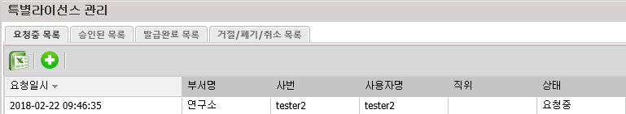
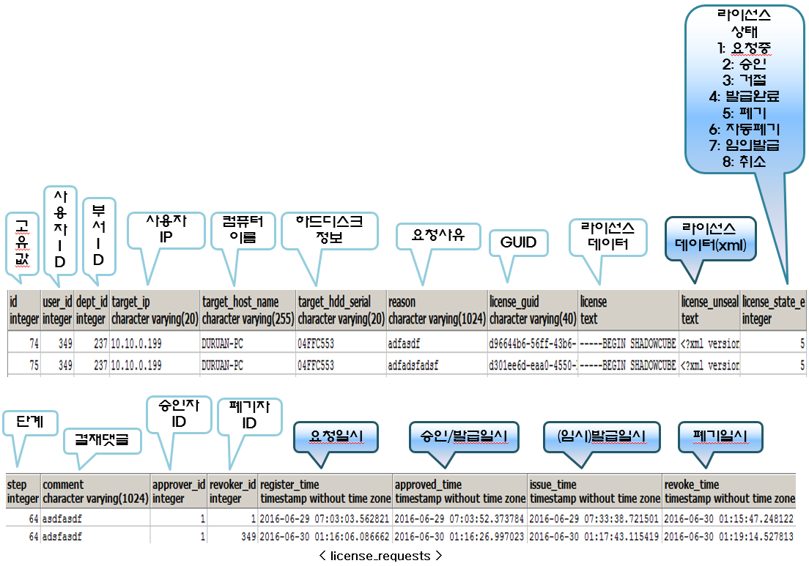
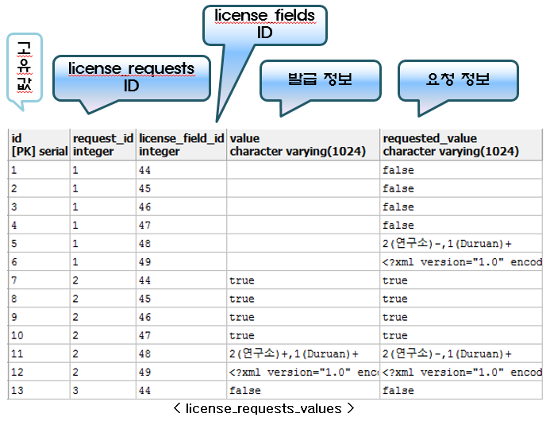

특별라이선스 관리 (license_requests, license_requests_values)
-
특별라이선스란, ShadowCube 사용자가 ShadowCube 서버와 통신이 되지 않는 해외로 출장을 가는 등의 경우에 발급하여 오프라인에서 사용할 수 있는 라이선스 이다.
-
특별라이선스 유효기간, 연장 횟수 등을 설정할 수 있다.
-
또한, 특별라이선스로 워터마크, 복사/붙여넣기, 스크린캡쳐 보안 기능을 해제할 수 있고, 문서그룹별로 복호화 권한을 부여할 수 있다.

※ 테이블 설명
-
ShadowCube 클라이언트에서 특별라이선스 발급 요청하면, license_requests 테이블에 클라이언트 PC 의 정보 (ip, hostname 등)를 저장하고
-
license_requests_values 테이블에는 특별라이선스 발급 시, 요청한 유효기간, 워터마크 해제, 복사/붙여넣기, 스크린캡쳐, 복호화 권한 여부 등을 저장한다.


이전